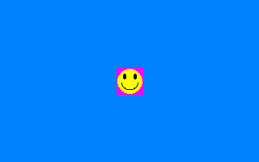

Help Center›FreeBASIC
Pset (Graphics Put)keyword
Parameter to the Put graphics statement which selects PSet as the blitting method
Syntax
Put [ target, ] [ STEP ] ( x,y ), source [ ,( x1,y1 )-( x2,y2 ) ], PSetDescription
The
PSet method copies the source pixel values onto the destination pixels.This is the simplest
Put method. The pixels in the destination buffer are directly overwritten with the pixels in the source buffer. No additional operations are done, and there are no color values that are treated as transparent. It has the same effect as PSetting each pixel individually.Remarks
Differences from QB
- None
See also
Example
'' set up a screen: 320 * 200, 16 bits per pixel
ScreenRes 320, 200, 16
Line (0, 0)-(319, 199), RGB(0, 128, 255), bf
'' set up an image with the mask color as the background.
Dim img As Any Ptr = ImageCreate( 33, 33, RGB(255, 0, 255) )
Circle img, (16, 16), 15, RGB(255, 255, 0), , , 1, f
Circle img, (10, 10), 3, RGB( 0, 0, 0), , , 2, f
Circle img, (23, 10), 3, RGB( 0, 0, 0), , , 2, f
Circle img, (16, 18), 10, RGB( 0, 0, 0), 3.14, 6.28
Dim As Integer x = 160 - 16, y = 100 - 16
'' Put the image with PSET
Put (x, y), img, PSet
'' free the image memory
ImageDestroy img
'' wait for a keypress
Sleep

Reference
- Documented in KeyPgPsetGfx.html